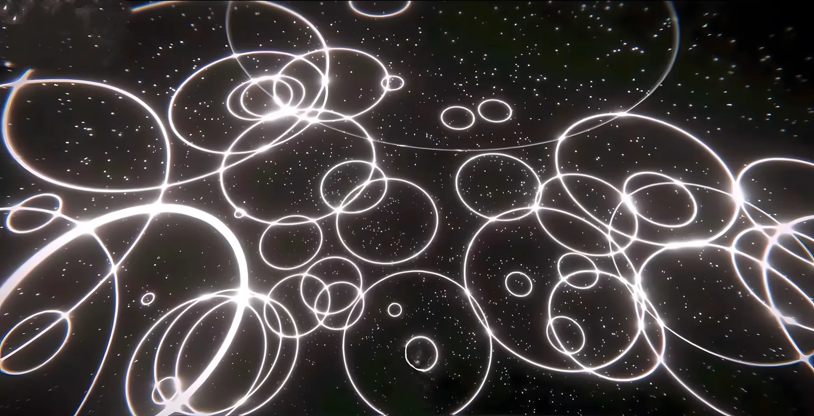
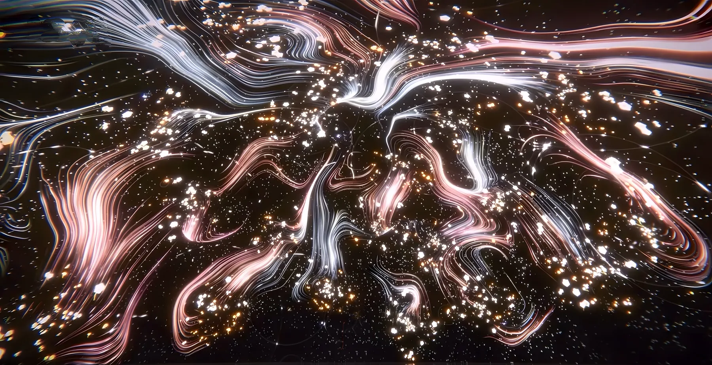
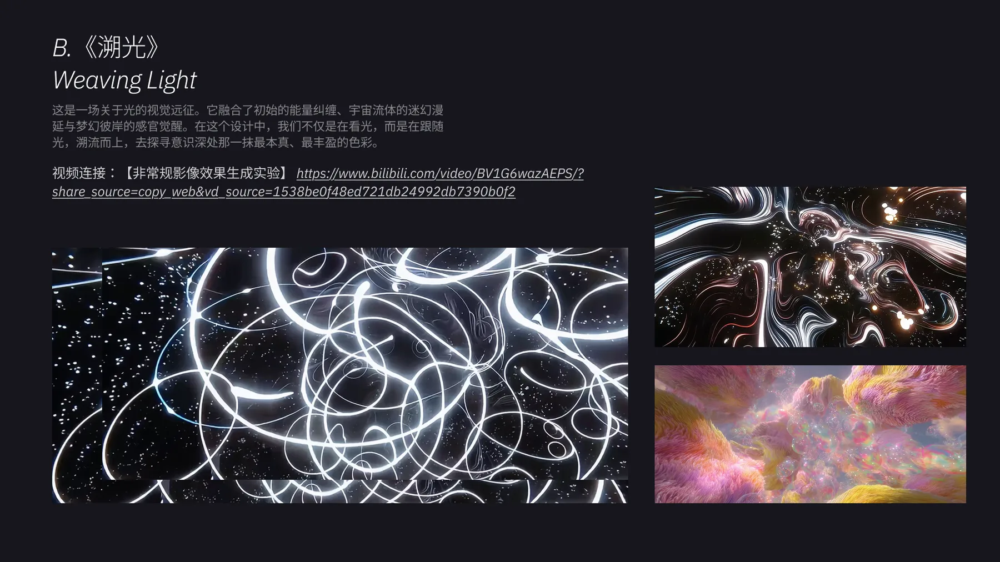

《溯光》Weaving Light
非常规影像效果生成实验
 观看视频
观看视频
《溯光》· 影像实验
原站视频/B 站非常规影像生成
旧版项目记录
一、作品目的导向&呈现
————目的导向
#《溯光》作品是探索和实验AIGC实现非常规影像效果在审美上的边界的一次尝试
B 站视频非常规影像效果生成实验_哔哩哔哩_bilibilibilibili.com ↗

二、作品简介
#《溯光》作品是探索和实验AIGC实现非常规影像效果在审美上的边界
概念简介：
引言：
《溯光》Weaving Light是一场关于光的视觉远征。它融合了初始的能量纠缠、宇宙流体的迷幻漫延与梦幻彼岸伊甸园的感官觉醒。在这个设计中，我们不仅是在看光，而是在跟随光，溯流而上，去探寻意识深处那一抹最本真、最丰盈的色彩。

设计概念：
本设计以《溯光》为题，旨在创造一个从抽象、基础的能量形态演变为具有触感和情绪的具象奇观的视觉旅程。它由三个核心阶段构成：
- 初始纠缠（源起）：借用冷冽、纯净的白光线条在绝对黑暗中形成的无序、复杂的纠缠网格，模拟宇宙大爆炸或意识觉醒之初的初始能量场，是“溯”的起点。
- 流体漫延（中途）：过渡到液态化的光，冷白光与粉、橙等暖色调交织成流动的纹理。这代表能量的流动与融合，是从单一走向多元、从纯粹能量向形式演变的漫延阶段。
- 感官彼岸（终点）：最终抵中极具触感的彩色毛绒岛屿也象征者人们心中伊甸园。光在这里不再仅仅是可见的，而是可触摸的、带有情绪的。被七彩泡泡包裹的梦幻场景是“光”的归宿与觉醒，是溯流而上后发现的丰盈彼岸。
整个视觉系统是一次感官的升华，从冷硬的几何线条最终融化为温暖、多姿的触感奇观。